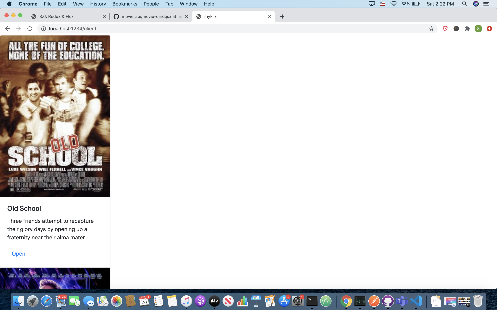
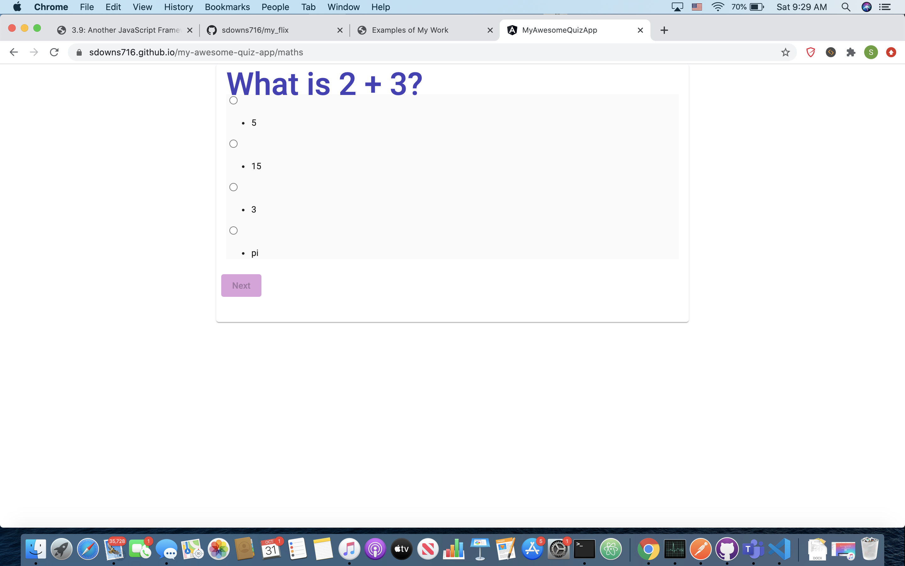
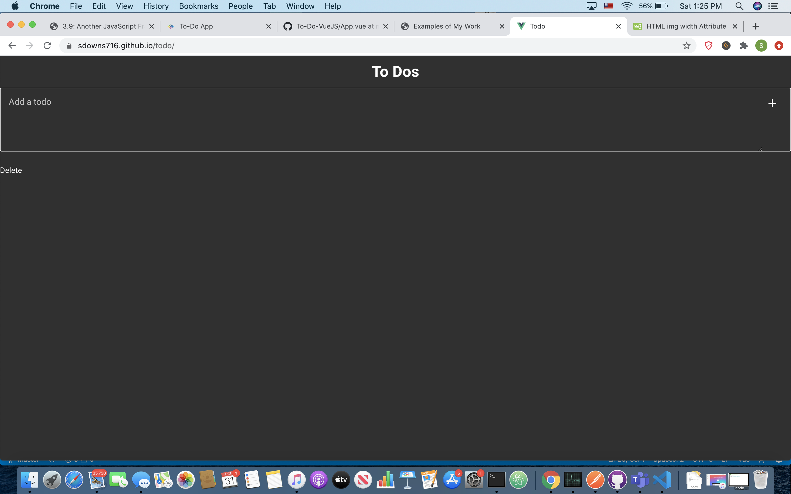
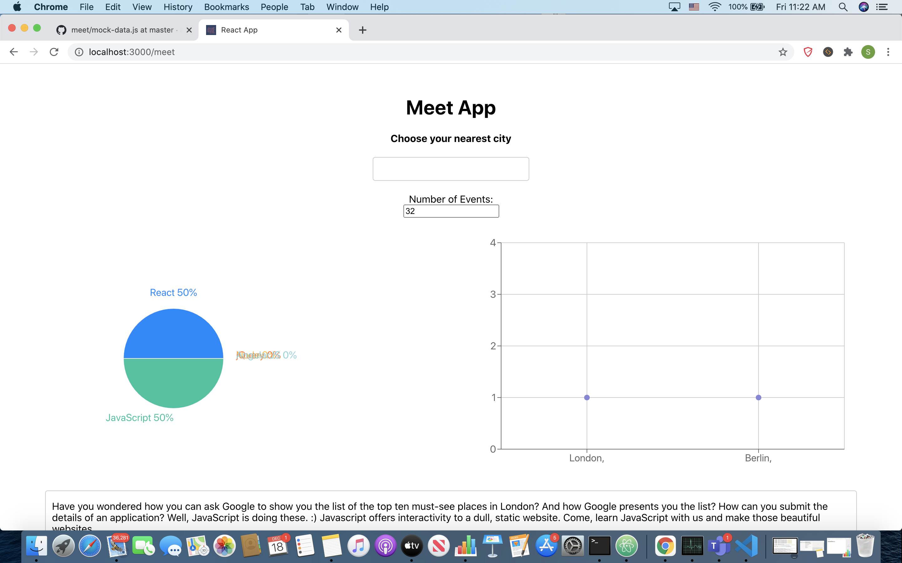
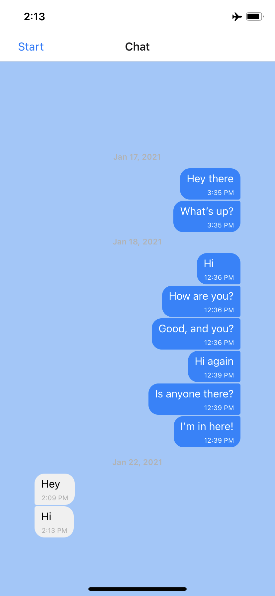

 This app was built using MongoDB, MongoDB Atlas, React, Redux and Bootstrap and it is hosted on Heroku. It is a a responsive application in which the client side takes user information and movie requests and return information from the server side.
Check out my app! This app was built using Angular, Angular Bootstrap, CSS and HTML. The app shows multiple choice questions and displays the results after the user answers the questions.
Check out my app! To create this app, I used Vue JS, Vue Material and CSS. Users are able to create a to-do list, save it in local storage, and edit or delete items on their list.
Check out my app! I created this app using React and testing throughout the development process. I incorporated data visualization with a scatterplot chart and pie graph. Used user stories to determine needed functionality.
Check out my app! I created this app using React-Native and Expo. Users can enter their username and pick a background color to enter the chat app where they can share images and/or their location. Used user stories to determine needed functionality. Used Kanban board to monitor project tasks.
See project on GitHub